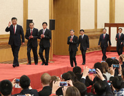
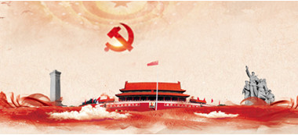

坚持走中国特色强军之路
——七论学习贯彻党的十九大精神
中国特色社会主义进入了新时代，国防和军队建设也进入了新时代。一支走过90年光辉历程的胜利之师，在新的历史起点整装再发。
“坚持走中国特色强军之路，全面推进国防和军队现代化。”党的十九大着眼于国家安全和发展战略全局，对国防和军队现代化作出“三步走”的战略安排，强调要确保到2020年基本实现机械化，信息化建设取得重大进展，战略能力有大的提升，力争到2035年基本实现国防和军队现代化，到本世纪中叶把人民军队全面建成世界一流军队。学习贯彻党的十九大精神，就要全面贯彻习近平强军思想，贯彻新形势下军事战略方针，建设一支听党指挥、能打胜仗、作风优良的人民军队，实现党在新时代的强军目标。
坚持走中国特色强军之路，必须保证党对军队的绝对领导，这是人民军队的建军之本、强军之魂。“金星闪耀在军旗上，我们的原则是党指挥枪”，十九大报告把“坚持党对人民军队的绝对领导”，
坚持走中国特色强军之路，必须按照强军方略要求，坚持政治建军、改革强军、科技兴军、依法治军。加强军队党的建设，开展“传承红色基因、担当强军重任”主题教育，推进军人荣誉体系建设，才能培养出有灵魂、有本事、有血性、有品德的新时代革命军人，永葆人民军队性质、宗旨、本色。按照党的十九大部署，我们必须继续深化国防和军队改革，完善和发展中国特色社会主义军事制度；
树立科技是核心战斗力的思想，建设创新型人民军队；全面从严治军，推动治军方式根本性转变，提高国防和军队建设法治化水平，为实现强军目标提供不竭动力。
坚持走中国特色强军之路，必须以新理念为指引，牢牢把握“五个更加注重”：更加注重聚焦实战，更加注重创新驱动，更加注重体系建设，更加注重集约高效，更加注重军民融合。一切工作都
从站起来、富起来到强起来，回首百年中国的沧桑巨变，展望民族复兴的光明前景，一个结论分外鲜明：“把军队搞得更强大，这样底气才足、腰杆才硬。”以习近平强军思想为行动指南，为实现党在新时代的强军目标、全面建成世界一流军队不懈奋斗，我们就一定能在中国特色强军之路上，担当起党和人民赋予的新的使命，不断书写强国强军的辉煌篇章。